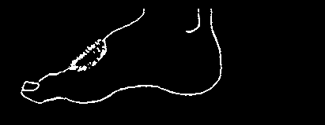
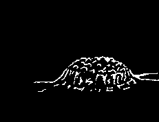
A Guide to Identification
IF THE SKIN
AND LOOKS
YOU MAY
SEE
HAS:
LIKE:
HAVE:
PAGE:
Simple warts, not very large.
common warts
(virus infection)
warts
Wart-like growths on the penis, vagina, or around the anus.
genital warts
Bumpy, wart-like growths on yaws other parts of the body.
Large warts (more than 1 cm.), a type of tuberculosis often on arms or feet.
of the skin
Small rings that continue
Ringworm to grow or spread and
(fungus infection)
may itch.
rings large circles with a thick border
(spots with advanced stage that do not itch.
of syphilis raised or red edges, often clear
Large rings that are white or lighter in the center)
colored and become numb in the center.
leprosy
(A needle prick does not hurt them.)
Small rings, sometimes with a small pit in the cancer middle, found on the of the skin temple, nose, or neck.
Very itchy rash, bumps, or patches. (They may appear welts or allergic reaction and disappear rapidly.)
hives contact
Blisters with bumps and much dermatitis itching and weeping (oozing).
(like poison ivy or sumac)
blisters
Small blisters over the whole body, chickenpox with some fever.
A patch of painful blisters that
Herpes zoster appears only on one part of the
(shingles)
body, often in a stripe or cluster.
A gray or black bad gas gangrene (very smelling area with blisters serious bacterial and air pockets that spread.
infection)
A rash that very sick small reddish children get over the measles spots or a whole body.
rash over the whole body;
After a few days of fever a few fever small pinkish spots appear on typhoid fever the body; the person is very sick.
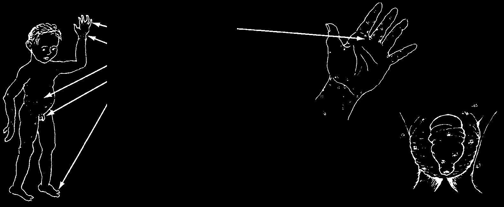
SCABIES (SEVEN YEAR ITCH)
Scabies is especially common in children. It causes very itchy little bumps that can appear all over the body, but are most common:
between the fingers on the wrists around the waist on the genitals between the toes usually does not appear on head
and face—except in babies
Small itchy sores on the penis
and scrotum of young boys
are almost always scabies.
Scabies is caused by little animals—similar to tiny ticks or chiggers—which make tunnels under the skin. It is spread by touching the affected skin or by clothes and bedding. Scratching can cause infection, producing sores with pus, and sometimes swollen lymph nodes or fever. The first time a person gets scabies, it can take 2 to
6 weeks for signs to appear. If the person has had scabies before, signs will appear in 1 to 4 days.
Treatment:
♦ If one person has scabies, everyone in his family should be treated. So should all sexual contacts.
♦ Personal cleanliness is of first importance. Bathe and change clothes daily.
♦ Cut fingernails very short to reduce spreading and infection.
♦ Wash all clothes and bedding or, better still, boil them. Hang them in the sun to dry.
♦ Remove all animals from the house.
♦ Use a cream containing permethrin (Elimite, see page 372). First wash the whole body vigorously with soap and hot water. Then rub the cream into the whole body except the face, unless it is affected. Leave it on for 10 to 14 hours, and then bathe again. Be sure to put on clean clothes and use clean bedding after treatment. Repeat treatment 1 week later.
♦ Do not use creams or ointments that include lindane. Lindane is a poison!
♦ If you cannot get permethrin, try crotamiton (Eurax, Crotan) but avoid using it on children under 3 years old.
♦ Or you can try using sulfur powder mixed with lard, Vaseline or body oil – use
1 part sulfur to 10 parts lard or oil. Do not use on children under 1 year old. Apply to whole body (except face) 3 times a day for 3 days. Stop using immediately if rash worsens or other signs of allergic reaction develop (see p. 166).
♦ If none of these treatments work, you can try giving a dose of ivermectin (see p. 377), and then repeat the dose after 10 to 14 days. This is the best method for a person with HIV.
The itching and rash may last for up to two weeks after treatment. If they last longer, it is possible that the person has been re-infected or that the treatment did not work. If after 2 weeks the signs have not gone away, repeat the treatment again or try a different treatment. remember to repeat the prevention actions as well.

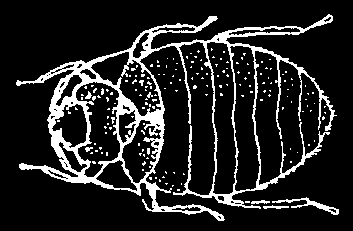

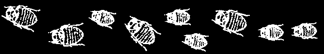
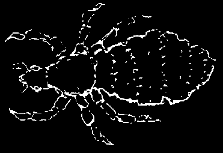
LICE
There are 3 kinds: head lice, body lice, and pubic lice (or
'crabs’) that live in the hairy parts of the body. Lice cause itching, and sometimes skin infections and swollen lymph nodes. To avoid lice, take great care with personal cleanliness.
Wash clothing and bedding often and hang them in the sun. Bathe and wash hair often.
Check children’s hair. If they have lice, treat them all at once, otherwise they will pass them back and forth to each other. Do not let a child with lice sleep with others.
Treatment:
For head and pubic lice: You can usually get rid of lice without medicines by scrubbing the hair well with regular soap or shampoo for 10 minutes. Rinse well, and comb thoroughly with a fine-tooth comb, being sure to remove all the lice and their eggs. Repeat every day for 2 weeks.
Do not use shampoos that include lindane. Lindane is poison! If regular shampoos do not work, medicated shampoos that include pyrethrins (RID) or permethrin (Nix)
may work, but follow the directions carefully. Keep them out of your eyes, watch for allergic reactions, and avoid them if you are pregnant or the person with lice is younger than 2 years old.
After treating for lice, you must also get rid of nits (lice eggs). If the eggs hatch, the lice will be back. People have tried different treatments, but they all include careful combing. Repeat combing every day for 2 weeks to make sure you remove all the lice and nits.
♦ Rub olive oil into the hair. This will loosen the nits so they are easier to remove with a fine-tooth comb. Some people find that oils such as tea tree, rosemary, or eucalyptus (this can feel hot!) work well, but other people have allergic reactions to them.
♦ Soak hair with warm vinegar water (1 part vinegar to 1 part water) for half an hour, then comb it thoroughly with a fine-tooth comb.
For body lice: Soak your whole body in a bath of hot water every day for 10 days. After each bath, wash thoroughly with soap and rinse well. Use a fine-tooth comb on any hairy places. If necessary, treat as for scabies. Keep clothing and bedding clean.
BEDBUGS
These are very small, flat, red-brown crawling insects that hide inside mattresses, bedding, furniture, and walls. They usually bite at night. The bites often appear in groups or lines.
To get rid of bedbugs, wash bedding in boiling water or bake in a hot stove (over
120°F/50°C) for at least 20 minutes. If you can find diatomaceous earth (a natural pesticide), sprinkle it around the bed to prevent bedbugs from crawling up. You can also try spraying mattresses, bed frames, and the area in which you sleep with a mixture of
2 parts water, 2 parts alcohol, and 1 part dish soap. Spray everywhere bedbugs might hide, then let dry. You may have to repeat again a few times during 2 weeks. Pyrethrin or permethrin (see Lice, above) might also work.
To prevent bedbugs, spread bedding, mats, and cots in the sun often.

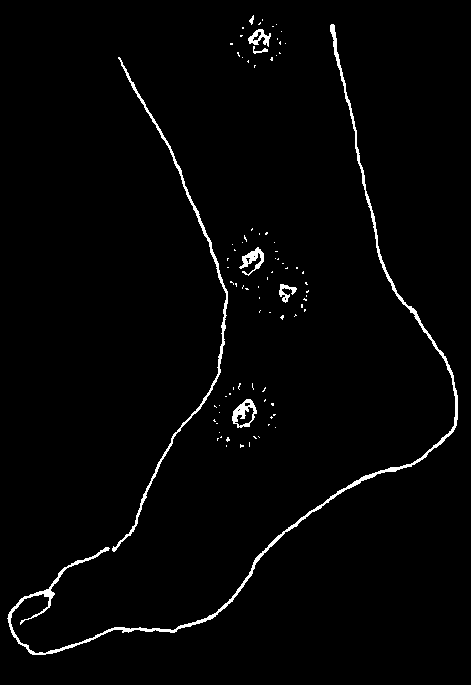
TICKS AND CHIGGERS
Some dangerous infections or paralysis are spread by tick bites. But careful removal within a few hours usually prevents these problems. So check the whole body well after walking in areas where ticks are common.
When removing a tick that is firmly attached, take care that its head does not remain in the skin, since this can cause an infection. Never pull on the body of a tick.
To remove a tick with tweezers, grasp the tick as close as possible to its mouth— the part sticking into the skin. (Try not to squeeze its swollen belly.) Pull the tick out gently but firmly. Do not touch the removed tick. To kill the removed tick, burn it, or hold a lit match near it, or put some alcohol on it.
To remove very small ticks or chiggers, use one of the remedies recommended for scabies (see p. 199). To relieve itching or pain caused by tick or chigger bites, take aspirin and follow the instructions for treatment of itching on p. 203.
To help prevent chiggers and ticks from biting you, dust sulfur powder on your body before going into the fields or forests. Especially dust ankles, wrists, waist, and underarms.
SMALL SORES WITH PUS
Skin infections in the form of small sores with pus often result from scratching insect bites, scabies, or other irritations with dirty fingernails.
Treatment and Prevention:
♦ Wash the sores well with soap and cooled, boiled
water, gently soaking off the scabs. Do this daily as long as there is pus.
♦ Leave small sores open to the air. Bandage large
sores and change the bandage frequently.
♦ If the skin around a sore is red and hot, or if the
person has a fever, red lines coming from the sore, or swollen lymph nodes, use an antibiotic—such as penicillin tablets (p. 351) or sulfa tablets (p. 356).
♦ Do not scratch. This makes the sores worse and can
spread infection to other parts of the body. Cut the fingernails of small children very short. Or put gloves or socks over their hands so they cannot scratch.
♦ Never let a child with sores or any skin infection play or sleep with other
children. These infections are easily spread.
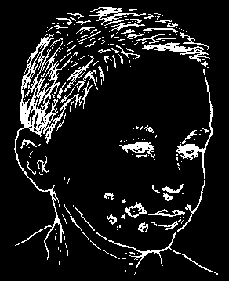

IMPETIGO
This is a bacterial infection that causes rapidly spreading sores with shiny, yellow crusts. It often occurs on children’s faces especially around the mouth. Impetigo can spread easily to other people from the sores or contaminated fingers.
Treatment:
♦ Wash the affected part with soap and cooled, boiled water 3 to 4 times each day, gently soaking off the crusts.
♦ After each washing, paint the sores with gentian violet (p. 370) or spread on an antibiotic cream containing bacitracin such as Polysporin (p. 370).
♦ If the infection is spread over a large area or causes fever, give cloxacillin or dicloxacillin (p. 350). If the person is allergic to medicines of the penicillin family or if these medicines do not seem to be helping, try doxycycline (p. 355) or cotrimoxazole (p. 357).
Prevention:
♦ Follow the Guidelines of Personal Cleanliness (p. 133). Bathe children daily and protect them from bedbugs and biting flies. If a child gets scabies, treat him as soon as possible.
♦ Do not let a child with impetigo sleep with other children or play with them. Begin treatment at the first sign.
YAWS
Yaws is a bacterial infection that you first notice when a painless, bumpy growth emerges and gets larger and may spread a little. After about 6 months, the growth disappears. months or years later, it reappears, spreads more, and may ooze. This is when it can spread to other people. These signs will also disappear. But if it is not treated, after 5 or 10 years the yaws infection can spread throughout the body, harming bones, joints, and causing other problems.
Treatment:
♦ Though the yaws bacteria is related to syphilis, it is spread by physical, not sexual, contact. Yaws can be tested for using the same test and treated using the same medicines and doses for syphilis (see pages 237 to 238).
BOILS AND ABSCESSES
A boil, or abscess, is an infection that forms a sac of pus under the skin, This can happen when the root of a hair gets infected. Or it can result from a puncture wound or an injection given with a dirty needle. A boil is painful and the skin around it becomes red and hot. It can cause swollen lymph nodes and fever.
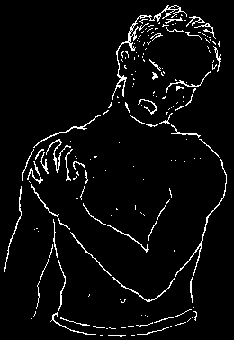
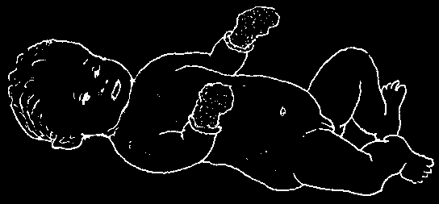
Treatment:
♦ Put hot compresses over the boil several times a day (see p. 195).
♦ Let the boil break open by itself. After it opens, keep using hot compresses.
Allow the pus to drain, but never press or squeeze the boil, since this can cause the infection to spread to other parts of the body.
♦ If the abscess is very painful and does not open after 2 or 3 days of hot soaks, it may help to have it cut open so the pus can drain out. This will quickly reduce the pain. If possible, get medical help.
♦ If the boil causes swollen nodes or fever, take penicillin tablets (p. 351) or erythromycin (p. 354) or dicloxicillin (p. 350), take 500 mg by mouth, 4 times a day for 7 days.
ITCHING RASH, WELTS, OR HIVES (ALLERGIC REACTIONS IN THE SKIN)
Touching, eating, injecting, or breathing certain things can cause an itching rash or hives in allergic persons. For more details, see Allergic
Reactions, p. 166.
Hives are thick, raised spots or patches that look like bee stings and itch like mad. They may come and go rapidly or move from one spot to another.
Be on the watch for any reaction caused by certain medicines, especially injections of penicillin and antivenoms or antitoxins made from horse serum. A rash or hives may appear from a few minutes up to 10 days after the medicine has been injected.
If you get an itching rash, hives, or any other allergic reaction after taking or being injected with any medicine, stop using it and never use that medicine again in your life!
This is very important to prevent the danger of ALLERGIC SHOCK (see p. 70).
Medicines used by people with HIV may cause a rash, especially cotrimoxazole
(p. 357) and nevirapine (p. 397). Sometimes the rash can be avoided by starting with a small amount of medicine and slowly increasing the amount to the full dose.
Treatment of itching:
♦ Bathe in cool water or use cool compresses—cloths soaked in cold water or ice water.
♦ Compresses of cool oatmeal water also calm itching. Boil the oatmeal in water, strain it, and use the water when cool. (Starch can be used instead of oats.)
♦ If itching is severe, take an antihistamine like chlorpheniramine (p. 386).
♦ To protect a baby from scratching himself, cut his fingernails very short, or put gloves or socks over his hands.


PLANTS AND OTHER THINGS THAT CAUSE ITCHING OR BURNING OF THE SKIN
Nettles, 'stinging trees’, sumac, 'poison ivy’, and many other plants may cause blisters, burns, or hives with itching when they touch the skin. Juices or hairs of certain caterpillars and other insects produce similar reactions.
In allergic persons rashes or 'weeping’ sore patches may be caused by certain things that touch or are put on the skin, Rubber shoes, watchbands, ear drops and other medicines, face creams, perfumes, or soaps may cause such problems.
Treatment:
All these irritations go away by themselves when the things that cause them no longer touch the skin. A paste of oatmeal and cool water helps calm the itching. Aspirin or antihistamines (p. 385) may also help. In severe cases, you can use a cream that contains cortisone or a cortico-steroid (see p. 370) To prevent infection, keep the irritated areas clean.
SHINGLES (HERPES ZOSTER)
Signs:
A line or patch of painful blisters that suddenly appears on one side of the body is probably shingles. It is most common on the back, chest, neck, or face. The blisters usually last
2 or 3 weeks, then go away by themselves.
Sometimes the pain continues or returns long after the blisters are gone.
Shingles is caused by the virus that causes chickenpox and usually affects persons who have had chickenpox before. It is not dangerous, but it can be painful. It is sometimes the first sign of some other more serious problem—perhaps cancer or HIV infection (see p. 399).
Treatment:
♦ Put light bandages over the rash so that clothes do not rub against it.
♦ Take aspirin for the pain. Acyclovir can help keep herpes blisters from spreading
(see p. 373). Antibiotics do not help.

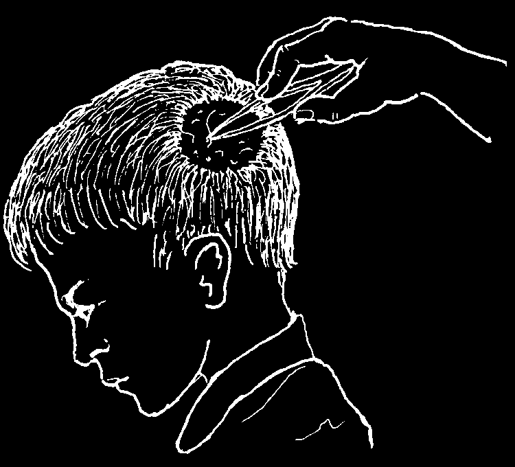
FUNGUS INFECTIONS (RINGWORM, TINEA)
Fungus infections may appear on any part of the body, but occur most frequently on:
the scalp the parts without between the between the legs
(tinea)
hair (ringworm)
toes or fingers
(jock itch)
(athlete’s foot)
Most fungus infections grow in the form of a ring. They often itch. Ringworm of the head can produce round patches with scales and loss of hair. Finger and toe nails infected with the fungus become rough and thick.
Treatment:
♦ Soap and water. Washing the infected part every day with soap and water may be all that is needed.
♦ Do your best to keep the affected areas dry and exposed to the air or sunlight. Change underwear or socks often, especially when sweaty.
♦ Use a cream of sulfur and lard (1 part sulfur to 10 parts lard).
♦ Creams and powders with salicylic or undecylenic acid, or tolnaftate
(Tinactin, p. 371) help cure the fungus between the fingers, toes and groin.
♦ For severe tinea of the scalp, or any fungus infection that is widespread or does not get better with the above treatments, take griseofulvin, 1 gram a day for adults and half a gram a day for children (p. 371). It may be necessary to keep taking it for weeks or even months to completely control the infection.
But pregnant women should not take griseofulvin.
♦ Many tineas of the scalp clear up when a child reaches puberty
(11 to 14 years old). Severe infections forming large swollen patches with pus should be treated with compresses of warm water (p. 195). It is important to pull out all of the hair from the infected part. Use griseofulvin, if possible.

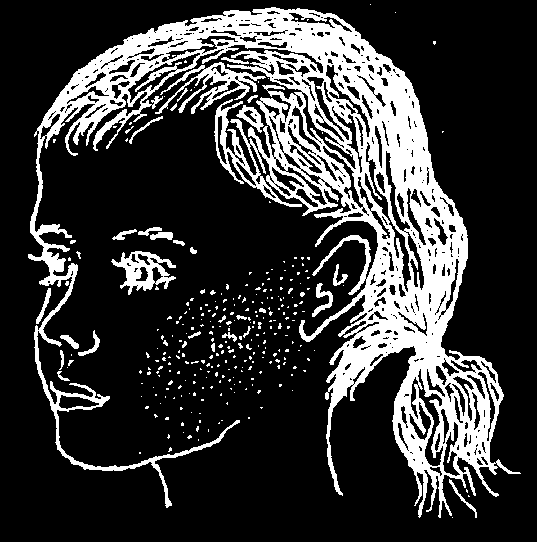
How to prevent fungal infections:
Ringworm and all other fungus infections are contagious (easily spread). To prevent spreading them from one child to others:
♦ Do not let a child with a fungal infection sleep with the others.
♦ Do not let different children use the same comb, or use each other’s clothing or towel, unless these are washed or well cleaned first.
♦ Treat an infected child at once.
WHITE SPOTS ON THE FACE AND BODY
Tinea versicolor is a mild fungus infection that causes small dark or light spots with a distinct and irregular border that are often seen on the neck, chest, and back. The spots may be slightly scaly but usually do not itch. They are of little medical importance.
Treatment:
♦ Make a cream with sulfur and lard (1 part sulfur to 10 parts lard) and apply it to the whole body every day until they disappear. Or use an anti-fungal cream (p. 371).
♦ Sodium thiosulfate works better. This is the 'hypo’
photographers use when developing film. Dissolve a tablespoon of sodium thiosulfate in a glass of water and apply it to the whole upper body. Then rub the skin with a piece of cotton dipped in vinegar.
♦ To prevent the spots from returning, it is often necessary to repeat this treatment every 2 weeks.
♦ Selenium sulfide (p. 371) or Whitfield’s ointment may also help.
There is another kind of small whitish spot that is common on the cheeks of dark-skinned children who spend a lot of time in the sun.
The border is less clear than in tinea versicolor.
These spots are not an infection and are of no importance. Usually they go away as the child grows up. Avoid harsh soaps and apply oil. No other treatment is needed.
Contrary to popular opinion, none of these types of white spots is a sign of anemia.
They will not go away with tonics or vitamins. The spots that are only on the cheeks do not need any treatment.
CAUTION: Sometimes pale spots are early signs of leprosy (see p. 191). Leprosy spots are never completely white and may have reduced feeling when pricked by a pin. If leprosy is common in your area, have the child checked.


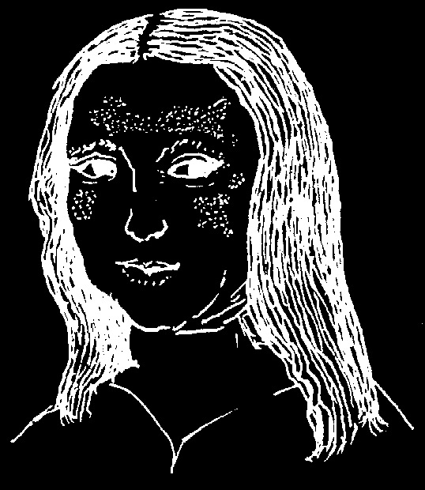
Vitiligo (White Areas of the Skin)
In some persons, certain areas of the skin lose their natural color (pigment). Then white patches appear. These are most common on the hands, feet, face, and upper body. This loss of normal skin color—called vitiligo—is not an illness. It can be compared to white hair in older people. No treatment helps or is needed, but the white skin should be protected from sunburn—with clothing or an ointment of zinc oxide. Also, special coloring creams can help make the spots less noticeable.
Other Causes of White Skin Patches
Certain diseases may cause white spots that look like vitiligo. In Latin America an infectious disease called pinta starts with bluish or red pimples and later leaves pale or white patches.
Treatment of pinta is 2.4 million units of benzathine penicillin injected into the buttocks
(1.2 million units in each buttock). For a person allergic to penicillin give tetracycline or erythromycin, 500 mg. 4 times each day for
15 days.
Some fungus infections also cause whitish spots (see tinea versicolor, on the opposite page).
General or patchy, partial loss of skin and hair color in children may be caused by severe malnutrition (kwashiorkor, p. 113; or pellagra, p. 208).
MASK OF PREGNANCY
During pregnancy many women develop dark, olive-colored areas on the skin of the face, breasts, and down the middle of the belly.
Sometimes these disappear after the birth and sometimes not. These marks also appear sometimes on women who are taking birth control pills.
They are completely normal and do not indicate weakness or sickness. No treatment is needed.

PELLAGRA AND OTHER SKIN PROBLEMS DUE TO MALNUTRITION
Pellagra is a form of malnutrition that affects the skin and sometimes the digestive and nervous systems. It is found in places where people eat a lot of maize (corn) or other starchy foods and not enough beans, meat, fish, eggs, vegetables, and other body-building and protective foods (see p. 110).
Skin signs in malnutrition (see the pictures on the following page):
In adults with pellagra the skin
In malnourished children, the is dry and cracked; it peels like skin of the legs (and sometimes sunburn on the parts where the arms) may have dark marks, like sun hits it, especially:
bruises, or even peeling sores;
the ankles and feet may be swollen (see p. 113).
on the nape of the neck on the arms on the backs of peeling sores the legs and dark marks swollen ankles and feet
When these conditions exist, often there are also other signs of malnutrition: swollen belly; sores in the corners of the mouth; red, sore tongue; weakness; loss of appetite;
failure to gain weight; etc. (see Chapter 11, p. 112 and 113).
Treatment:
♦ Eating nutritious foods cures pellagra. Every day a person should try to eat beans, lentils, groundnuts, or some chicken, fish, eggs, meat, or cheese. When you have a choice, it is also better to use wheat (preferably whole wheat) instead of maize (corn).
♦ For severe pellagra and some other forms of malnutrition, it may help to take vitamins, but good food is more important. Be sure the vitamin formula you use is high in the B vitamins, especially niacin. Brewer’s yeast is a good source of
B vitamins.


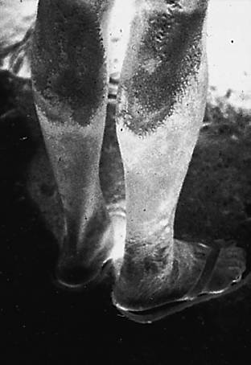

Before eating well
After eating well
The swelling and dark spots
One week after he began to on this boy’s legs and feet are eat beans and eggs along with the result of poor nutrition. He the maize, the swelling was was eating mostly maize (corn)
gone and the spots had almost without any foods rich in proteins disappeared.
and vitamins.
The 'burnt’ skin on the legs
The white spots on the legs of this woman is a sign of of this woman are due to an pellagra—which results from infectious disease called pinta not eating well (see p. 208).
(see p. 207).
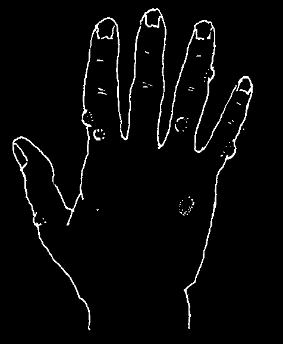
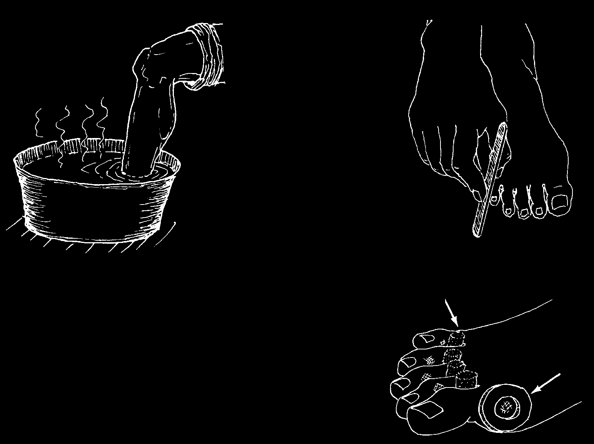
WARTS (VERRUCAE)
Most warts, especially those in children, last 3 to
5 years and go away by themselves. Flat, painful wart-like spots on the sole of the foot are often 'plantar warts’.
(Or they may be corns. See below.)
Treatment:
♦ Magical or household cures often get rid of warts.
But it is safer not to use strong acids or poisonous plants, as these may cause burns or sores much worse than the warts.
♦ Painful plantar warts sometimes can be removed by a health worker.
♦ For warts on the penis, vagina, or around the anus, see p. 402.
CORNS
A corn is a hard, thick part of the skin. It forms where sandals or shoes push against the skin, or one toe presses against another. Corns can be very painful.
Treatment:
♦ Get sandals or shoes that do not press on the corns.
♦ To make corns hurt less, do this:
1. Soak the foot in warm
2. With a file or rasp, trim down the water for 15 minutes.
corn until it is thin.
rolls of
3. Pad the foot around the corn so that cotton it will not press against the shoe or another toe. Wrap the foot or toe in a soft cloth to make a thick pad and cotton or cut a hole around the corn.
cardboard

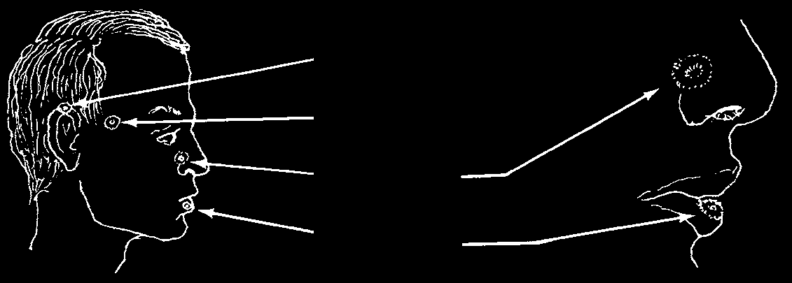
PIMPLES AND BLACKHEADS (ACNE)
Young people sometimes get pimples on their face, chest, or back—especially if their skin has too much oil in it. Pimples are little lumps that form tiny white 'heads’ of pus or blackheads of dirt. Sometimes they can become quite sore and large.
Treatment:
♦ Wash the face twice a day with soap and hot water.
♦ Wash the hair every 2 days, if possible.
♦ Sunshine helps clear pimples. Let the sunlight fall on the affected parts of the body.
♦ Eat as well as possible, drink a lot of water, and get enough sleep.
♦ Do not use skin or hair lotions that are waxy, oily, or greasy.
♦ Before you go to bed, put a mixture of alcohol with a little sulfur on the face
(10 parts alcohol to 1 part sulfur).
♦ For serious cases forming lumps and pockets of pus, if these do not get better with the methods already described, tetracycline may help. Take 1 capsule
4 times a day for 3 days and then 2 capsules daily. It may be necessary to take 1 or 2 capsules daily for months.
CANCER OF THE SKIN
Skin cancer is most frequent in light-skinned persons who spend a lot of time in the sun. It usually appears in places where the sun hits with most force, especially:
on the ear on the cheekbone or temple on the nose on the lips
Skin cancer may take many forms. It usually begins as a little ring the color of pearl with a hole in the center. It grows little by little.
Most cancers of the skin are not dangerous if treated in time. Surgery is needed to remove them. If you have a chronic sore that might be skin cancer, see a health worker.
To prevent skin cancer, light-skinned persons should protect themselves from the sun and always wear a hat. Persons who have suffered from cancer of the skin and have to work in the sun can buy special creams that protect them. Zinc oxide ointment is cheap and works well.
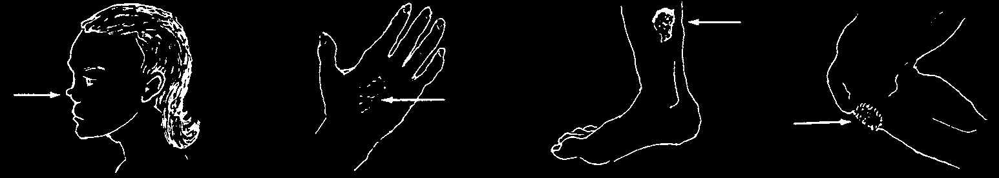
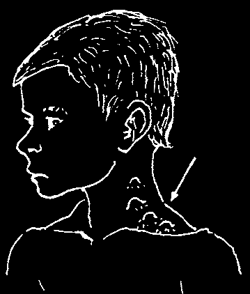

TUBERCULOSIS OF THE SKIN OR LYMPH NODES
The same microbe that causes tuberculosis of the lungs also sometimes affects the skin, causing painless tumors chronic patches of skin big that disfigure, sores, ulcers, or warts.
As a rule, TB of the skin develops slowly, lasts a long time, and keeps coming back over a period of months or years.
Also, tuberculosis sometimes infects the lymph nodes—most often those of the neck or in the area
TUBERCULOSIS
behind the collar bone, between the neck and the
OF THE LYMPH
NODES, OR
shoulder. The nodes become large, open, drain pus,
SCROFULA
seal closed for a time, and then open and drain again.
Usually they are not painful.
Treatment:
In the case of any chronic sore, ulcer, or swollen lymph nodes, it is best to seek medical advice. Tests may be needed to learn the cause. Tuberculosis of the skin is treated the same as tuberculosis of the lungs (see p. 180). To keep the infection from returning, the medicines must be taken for many months after the skin looks well.
ERYSIPELAS AND CELLULITIS
Erysipelas (or St. Anthony’s fire) is a very painful acute (sudden) infection in the skin. It forms a hot, bright red, swollen patch with a sharp border. The patch spreads rapidly over the skin. It often begins on the face, at the edge of the nose. This usually causes swollen lymph nodes, fever, and chills.
Cellulitis is also a very painful, acute infection of the skin that can appear anywhere on the body. It usually occurs after a break in the skin. The infection is deeper and the borders of the patch are less clear than with erysipelas.
Treatment:
For both erysipelas and cellulitis, begin treatment as soon as possible. Use an antibiotic: penicillin tablets, 400,000 units, 4 times a day, in serious cases, injectable procaine penicillin, 800,000 units daily (see p. 352). Continue using the antibiotic for 2 days after all signs of infection are gone. Also use hot compresses— and aspirin for pain.
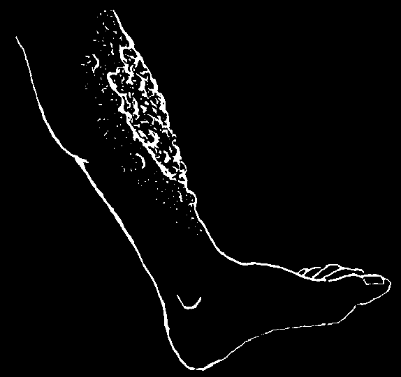

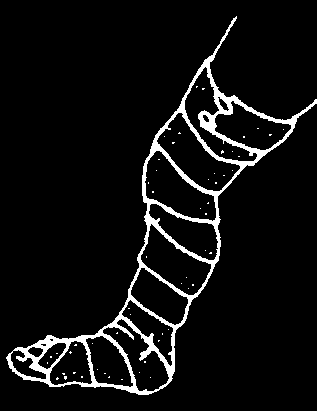